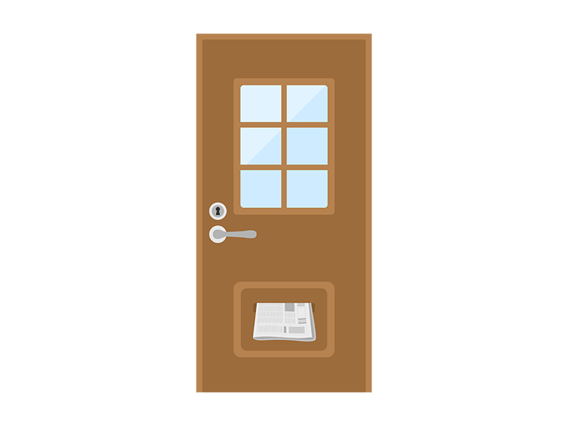

立地や家賃も大切ですが、虫嫌いの人がやちゃいけない条件もあります。
物件選びの際にいくつかのポイントを押さえれば、ある程度「彼らが出づらい部屋」に住むことは可能です！
物件の階数や築年数から判断する
彼らは下から上への飛行能力に乏しいため、ある程度の階数以上であれば侵入リスクを軽減させることができます。外壁や家のそばの高い街路樹や電柱などをのぼってきたり、エレベーターなどで移動したりする可能性はあるものの、下層階と比べれば出合う確率は低くなるのです。
また、築年数が経過した物件は、建物の劣化が進んでいる可能性もあり、壁のひび割れや窓や戸の隙間などから侵入されてしまうケースが考えられます。特に、古くなっている配管は彼らの侵入ルートとなる可能性が高いでしょう。
ただし、築年数が経過していてもリフォームやリノベーションによって修繕されている場合もあります。また、配管が交換されていたり、定期的に洗浄が行われていたりするだけでも、彼らの侵入リスクは大きく低下します。
そのため、築年数は一応の目安とはなるものの、単純な判断材料とはなりません。建物の経過年数以上に、共用部分の管理状態が重要なポイントとなるのです。
物件の立地から検討する
彼らが出やすい条件としては、1階が飲食店などになっていることが挙げられます。彼らは、豊富なエサがあって暗く湿気のある場所を好むため、飲食店やコンビニエンスストアなどの店舗は格好のすみかとなってしまうのです。
店舗自体は清潔にしていても、ゴミ置き場や排水口などで繁殖してしまう恐れがあるため、発生リスクを下げるのは困難だといえます。そのため、通常の物件と比べると、上の部屋への侵入リスクも高まります。
また、公園にも、意外と彼らが潜んでいます。昆虫が住みやすい自然環境は、野良のGにとって居心地よい住処。自然を模した公園も同じです。野良Gの侵入を防ぐためには、山や森、公園に接した物件は避けましょう。特に、木やほかの建物との距離が近い物件は、窓や玄関から侵入してしまう可能性もあります。
周囲の状況や条件から判断してみる
彼らの侵入リスクは、周囲の状況からもある程度まで見極められます。たとえば、収集所にゴミが散乱している場合は、そこから繁殖してしまう恐れがあるだけでなく、共用部分の管理が行き届いていないと判断することもできるのです。
また、両隣や上下階に空き部屋がないか確認しておくことも大切となります。彼らにとって人間は天敵であるため、人のいない空き部屋では繁殖しやすいのです。
空き部屋の有無を確認したうえで、風通しが良く、湿気のこもらない物件を選びましょう。
3階以上（上層階であるほど◎）
壁をのぼり、空を飛ぶ彼ら。それでもやはり、1階よりは2階、2階よりは3階……と、上層階に行けば行くほど侵入しづらくなるようです。虫嫌いの人は、できるだけ上層階を選ぶのが吉です。
しかし入口が1階で玄関に階段がある場合は玄関からの侵入で入りやすいです。また3階以上でも階段や壁を使って自力で上がってきたり、エレベーターを使って登ってくる事があります。
木造以外のつくりである
木造の建物は、虫やネズミが齧るなどして小さな穴をあけやすく、彼らが侵入しやすいと言えます。また木造物件は、構造上どうしても壁などに隙間ができやすいもの。狭くて暗い隙間に潜むのが大好きな彼らにとって天国です。
アパートやマンションは、RC造やSRC造といった、木造以外のつくりのものを選びましょう。
真下が空き部屋になっていない
彼らは埃すらエサにして生きるため、長く空き部屋になっている場所には喜んで巣を作ります。自分の部屋なら駆除もできますが、もし真下の部屋が巣窟になっていたら……おぞましい事態になるかも！
気に入った物件が2階以上の部屋ならば、真下の部屋が埋まっているかどうか、何年も未入居のままでないかどうかを不動産会社に確認しましょう。
付近の道、マンションの共有部が清潔
ゴミはGの大好物。あなたがいくら自分の部屋を清潔にしても、周囲の環境がゴミだらけでは意味がありません。
物件に面している道路や、マンションの共有部などにゴミが放置されていないかよく確認してください。隣の部屋の住人がベランダにゴミを放置していないかも、要チェック。ゴミ捨て場のすぐ目の前の部屋も、できれば避けたいところです。
ポストがドアと分離している
マンションやアパートにありがちな、ドアポスト。玄関ドアに直接穴があいているタイプのポストですが、この穴が実は、新聞や郵便物が挟み込まれている間、彼らの格好の侵入経路と化します。
できれば、ポストは玄関ドアとは別の場所に、箱として設置されている物件を選びましょう。
工場が近くにないか
工場地帯などですと衛生的に清潔にしていない可能性があります。又ネズミなども工場内に住んでいる事もあります。
外国人の集団が住んでいる
人種差別ではなく不動産の方に聞いた話ですが、退去時に匂いはもちろん傷や汚れが多い傾向にあるようです。
彼たちも悪気がないとは思いますが出来るのであれば避けるのが無難です。
近所がごみ屋敷、多頭飼育崩壊
ごみ屋敷はやはり彼らが集まりやすいです。又多頭飼育崩壊は掃除が行き届いていない事が多いですが、最悪の場合は共食いにより死体が腐敗して閉まっていることも多々あります。